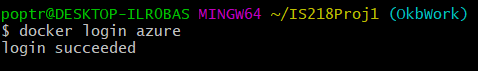

Intro to Azure
Microsoft Azure, commonly referred to as Azure, is a cloud computing service created by Microsoft for building, testing, deploying, and managing applications and services through Microsoft-managed data centers.
- Visit this site to create an Azure account with username and password.
- Follow the prompts to create your personal account or organization.
- Log into Azure account.
- In the command prompt run "docker login azure". this should to take you to a login page. 
- Create an ACI context with the command "docker context create aci myacicontext".
- Running the command "docker --context myacicontext run -p 8080:80 nginx" will now host your site on the internet.
- To view logs from your container, run: "docker logs **container id**".
Docker-Azure integration